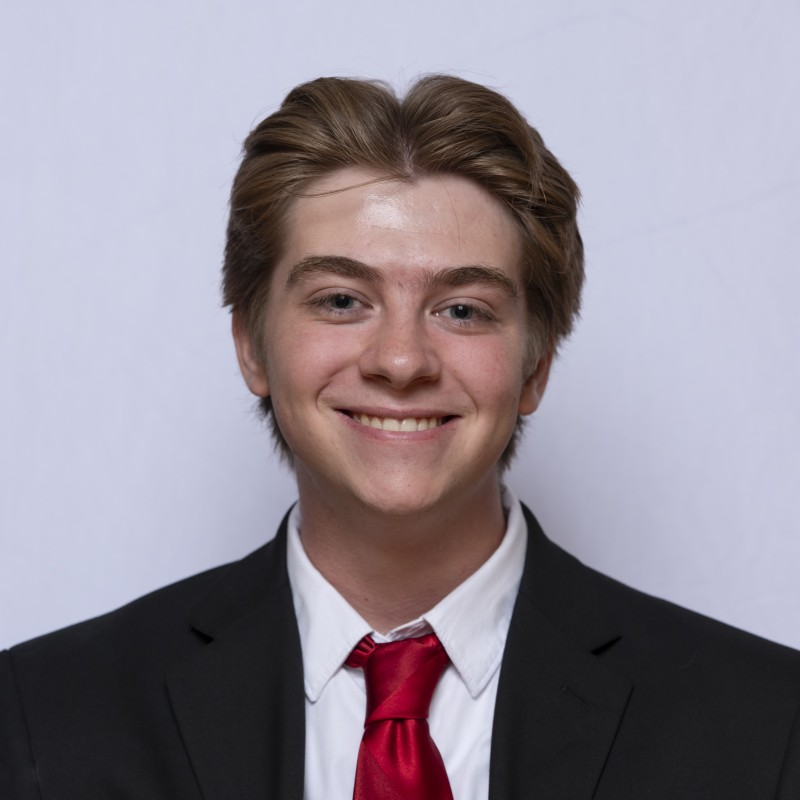

I am a Computer Science and Data Science student at Mizzou, and I am passionate about software development and growing my technical ability alongside an AI-forward skillset.
View Projects
My main goal is to continue developing my skills in the software engineering world, as well as overall computer science and data science concepts. Because I am passionate about making an impact in the field, I am also motivated to continuously gain experience working on projects that matter whether that is through internships or my personal projects. This portfolio is intended to showcase the projects I have worked on, as well as the real world experience I have gained and hopefully show what experience I hope to gain in the near future with more opportunities. For me, expanding my technical knowledge is not just a means to an end for a job, but it is a passion that I have and want to continue growing in.
“Find a job you love, and you will never have to work a day in your life.” - Unknown